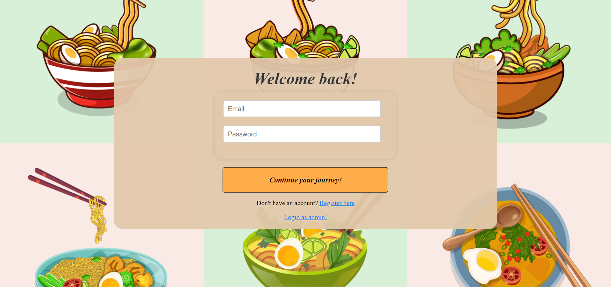
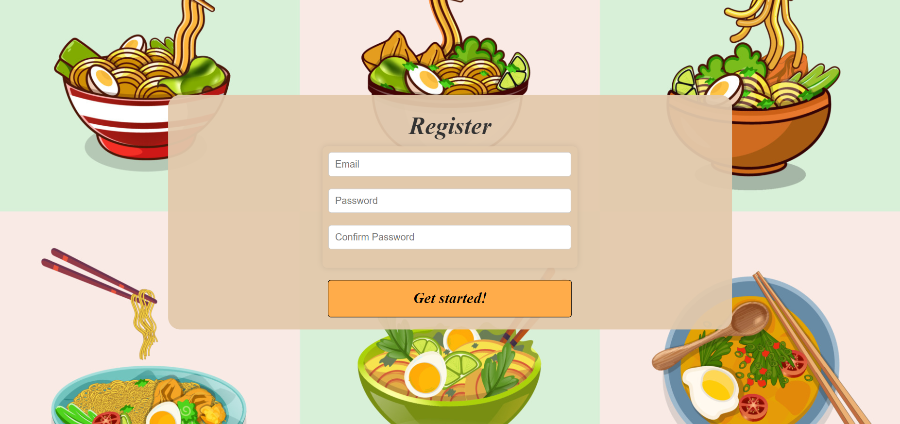
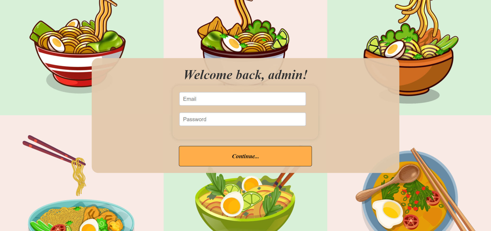
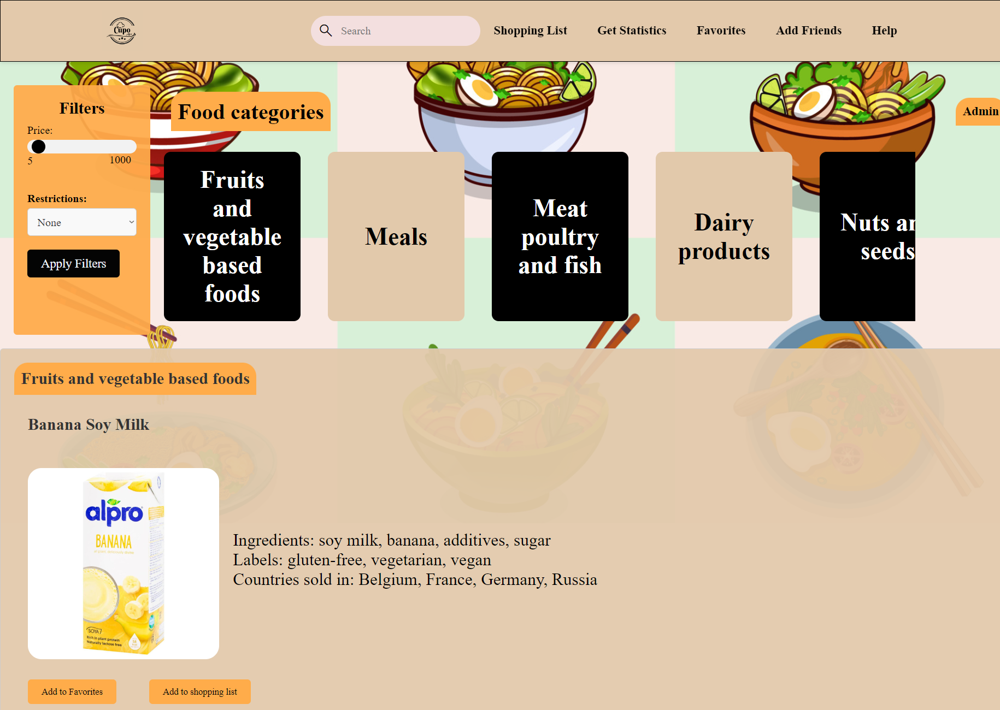
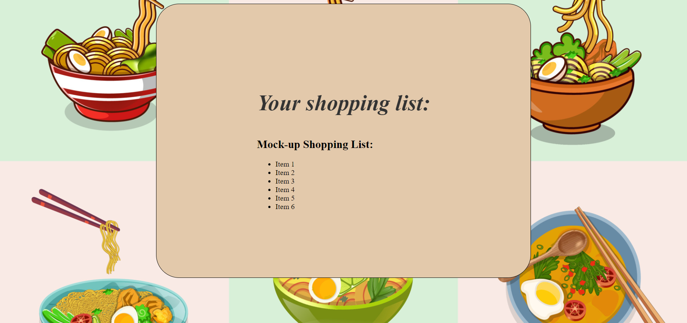
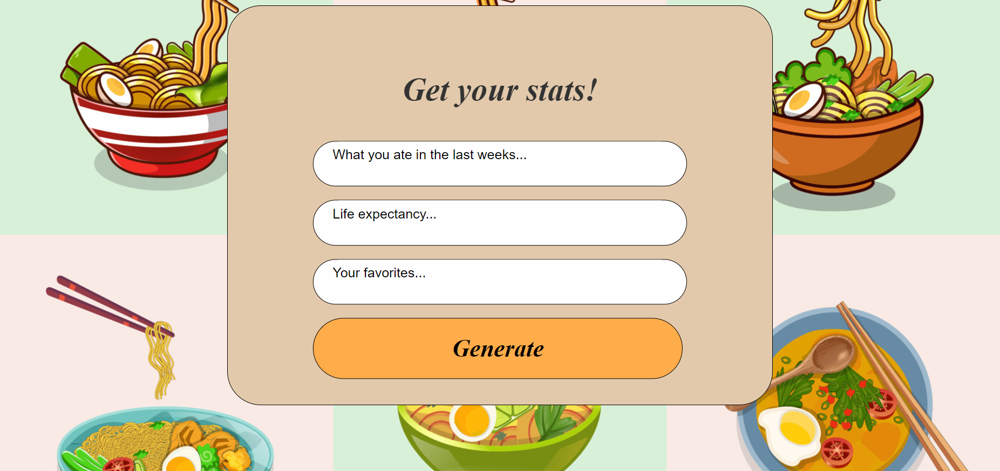
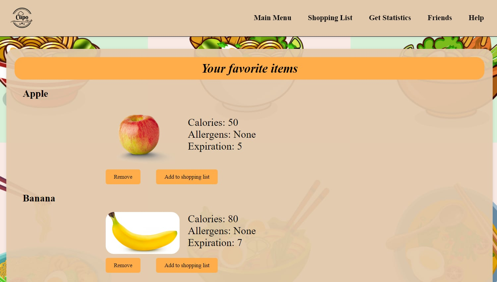
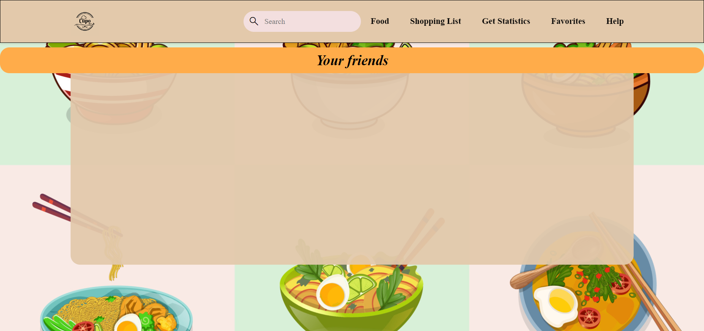
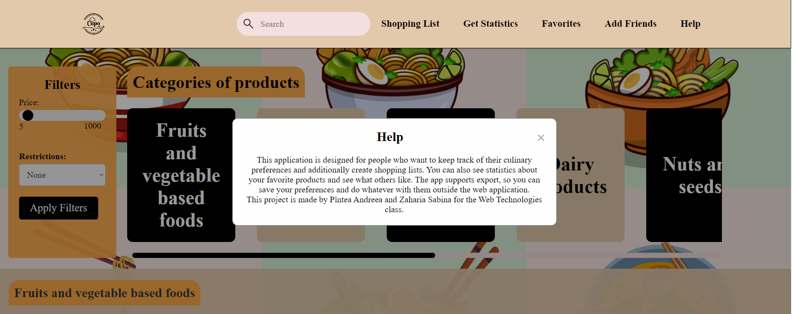

Culinary Preferences Organizer - Web Technologies Project
Authors
1. Introduction. Purpose. Product scope
The purpose of this document is to present a detalied description of the web application Culinary Preferences. It will explain the purpose, features, interface, what it intends to do, and what constraints it has.
This document is intended for any user of the application, or anyone that requires information about it.
The intention of this application is to provide support in choosing certain foods, and adding them to favorites or shopping list. It will provide a place to store and manage the user's shopping lists. The app provides a way to export the preffered data in a CSV or PDF form. Also, it provides various statistics regarding foods around the globe, obesity rates, and fun facts.
2. Overall description
2.1 Product description
This app is meant for people who will input their culinary preferences and they will get personalised recommendations and statistics based on them.
Another functionality is the shopping list, where they can add items that we recommend or just what
they would like to shop.
In addition, a user should be able to add other users as friends and
create common shopping lists.
2.2 Product functions
This app is meant for people who will input their culinary preferences from a foods menu, populated with items from various categories and store their shopping lists.
Another functionality is the shopping list, where they can add items from their favorites or that they would like to shop.
The web application will have the following pages:
- The home page- this is the first thing you see on the application. It will have a registration/login form, since being logged in is a requirement for the user to be able to access the other features
- The admin interface - the admin can see both the users and the products table, and has the right to add, modify and remove cells
- The menu page- after you have logged in, you can access this page, where you can view the products along with their image, category, number of calories and expiration date. You can add the items to your favorites or to one of your shopping lists. You can customize your filter by the calories and expiration date.
- The shopping list page- this is the page where the user can see their shopping lists. The shopping list can have items from the favorites options, or just aliments that the user
- The favorites page- this is the page where the user can view its favorite items, that he added from the menu. This page provides two ways to export the favorites items data: in a CSV format or a PDF one.
- The statistics page- this is the page where the user can get various predefined statistics.
- The friends page- this is the page where the user can search for friends from the database, by email. When the user types a name, the results will be dynamically shown on the page.
- The help page- this is the page where the user can see general helpful hacks about the page that he is on.
2.3 User classes and Characteristics
- App user: This app can be used by people of all ages, but the main age target will be between 20-50. It can be used by anyone that has an account as in logged in that wants to filter their food options, to keep track of their shopping list, and see various fun food statistics.
- Admin: They can modify(add, edit, delete) the products displayed on the website and can view all current users.
2.4 Operating environment
The developed product can be used on any device that has a connection to the Internet and a web browser.
2.5 Design and Implementation Constraints
The web application is developed using Node.js, and is using HTML, CSS and JS for the interface. It also uses MySQL WorkBench for data storage.
3. External Interface Requirements
3.1 User Interfaces
-
Login page
 -
Register page
 -
Admin Login page
 -
Admin Home page
 -
Menu page - the same as admin home page, but without the Admin button

-
Shopping list page
 -
Statistics page
 -
Favorites page
 -
Add Friends page
 -
Help

3.2 Software Interfaces
The minimum software requirements of the application are a working browser and a connection to the Internet.
3.3 Communication Interfaces
The communication standard that is used is HTTP. The app requires an Internet connection.
3.4 Security Requirements
To maintain a safety measure for storing the user's data, its password will be stored in a hashed manner in the database, and it can only be seen by the user. Only a logged user can access the functionalities of this web app. The user is being alocated a JWT on login that stays with him thorought the session, and dissappears at logout.
3.5 Safety Requirements
The use of this app doesn't present any means of possible loss, damage or harm to the user.
4. System Features
4.1 Login
The first page a user sees is the login page, because in order to personalise the information we need an account for each user.
4.2 Register
For the users that first enter this website, next we have the register page accessed through the "Don't have an account? Register here" button.
4.3 Admin login
For out predefined admins we have a special login page in order to access the menu page that has the "Admin" button.
4.4 Home page and Admin home page
The home page for both types of users will be a presentation of the food categories and items, followed by detailed sections where users can scroll through all the products. Also the logo acts as a way of automatically scrolling to the top of the page. The sidebar has filters needed to select and find easier the desired products. The header will pe present on all pages as a way of easier navigation.
4.5 Admin
The admin will be able to view users and products databases and modify the latter by adding products, deleting or editing their details.
4.6 Shopping list
A page dedicated to viewing all shopping lists, with the posibility of creating new ones or deleting old ones.
4.5 Statistics
Here a user will find various predefined statistics, mainly for entertainment.
4.5 Add friends
Here the user can search by email a user(s) from the data base, and based on that the names will appear. If no names match, it will not return any user.
4.6 Export CSV/PDF
The user can choose to export the data from its favorites page in a CSV or a PDF format.
4.7 Help
This is a popup provided as a guide for a new user.
Use of Technologies. Motivation
HTML
- 1. Universal language - is understood by all browsers, making it a universal language for creating web content that can be accessed by a wide audience.
- 2. Structure + Semantics - it provides a structured way to organize content, making it easier to understand, navigate and interpret.
- 3. Mobile friendly - it supports responsive design, allowing content to adapt to various screen sizes, aspect that is crucial in an app.
- 4. Industry Standard - as the standard markup language for creating web pages, HTML is a valuable skill for anyone involved in web development, content creation, or digital design.
CSS
- 1. Enhanced Visual Design - CSS allows for the separation of content from design, enabling you to create visually appealing and engaging web pages
- 2. Responsive Layouts - CSS facilitates the creation of responsive designs, ensuring that web content adapts seamlessly to different devices and screen sizes.
- 3. Mobile friendly - it supports responsive design, allowing content to adapt to various screen sizes, aspect that is crucial in an app.
Node.js
- 1. Fast development - With its event-driven architecture and extensive module library, Node.js promotes fast and efficient development, ideal for agile and rapid iteration.
- 2. Rich Ecosystem - it has a vast ecosystem of libraries and packages available through npm (Node Package Manager), providing a wealth of tools and resources for developers
Database - MySQl
- mySQL - relational model
- mySQL - data integrity
- mySQL - acid compliance(atomicity, consistency, isolation, durablity)